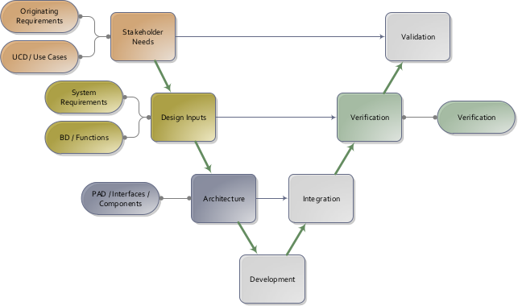
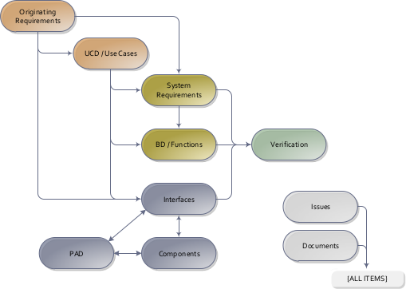

This is part 4 of the following series:
The document maps all specifications to hardware or software interfaces. To contribute more contents, identify all external interfaces and describe all properties that meets the system-level specifications: mechanical / optical / electrical / softrware. Omit all internal interfaces; those should reside in code comments or in the technical reports.
This document follows the Product Requirement Specifications (PRS), where the interfaces linking various sub-systems are captured.
There are also lower level internal interfaces; these are often the interfaces that are owned by a single engineer (e.g. the electrical interfaces found on a single circuit board). These lower level interfaces are not given a number and description, are not turned into requirements, and instead are captured in lower level specifications and design documentation.

Similar to defining use cases, the process of capturing the architecture via a Physical Architectual Diagram is helpful to ensure that the interfaces are identified. For particularly complicated interfaces, the descriptions above can reference a more detailed document (such as a mechanical interface drawing, electrical pinout, firmware/software communication protocol, etc.).

A power port accessible by the user and used to charge the device.
node "Charging subsystem" {
[Data port] -- () "[int-2] Front panel"
[Data port] -- (int-3)
[Power port] -- () "[int-1] Power interface"
[Power port] -- () "[int-2] Front panel"
[LEDs] -- () "[int-2] Front panel"
[Device housing] -- () "[int-2] Front panel"
[PCB] -- [LEDs]
[PCB] -- [Data port]
[PCB] -- [Power port]
}
node Computer
node User
node "Power supply" as PS
Computer ..> (int-3): use
User ..> () "[int-2] Front panel": use
PS ..> () "[int-1] Power interface": use
The device connects to a power supply via a connector for charging.
Implements:
The device has a physical port on the front panel for charging.
Implements: